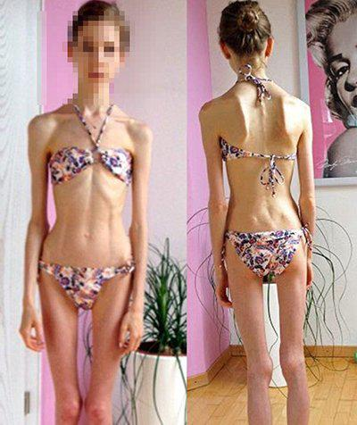
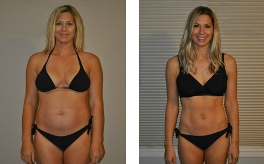
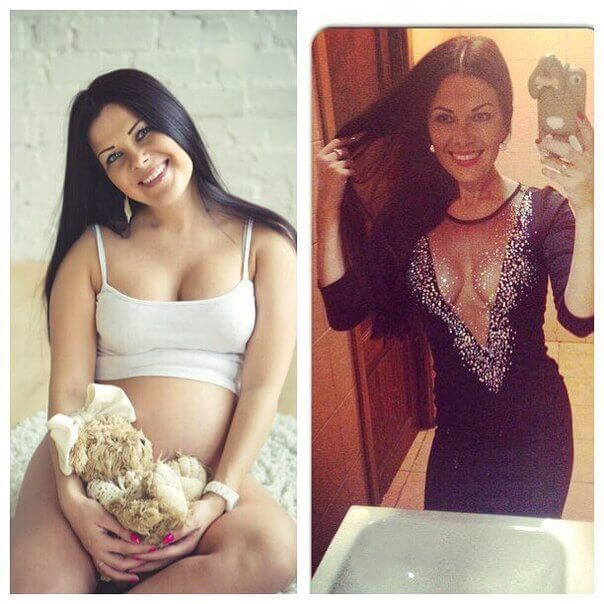
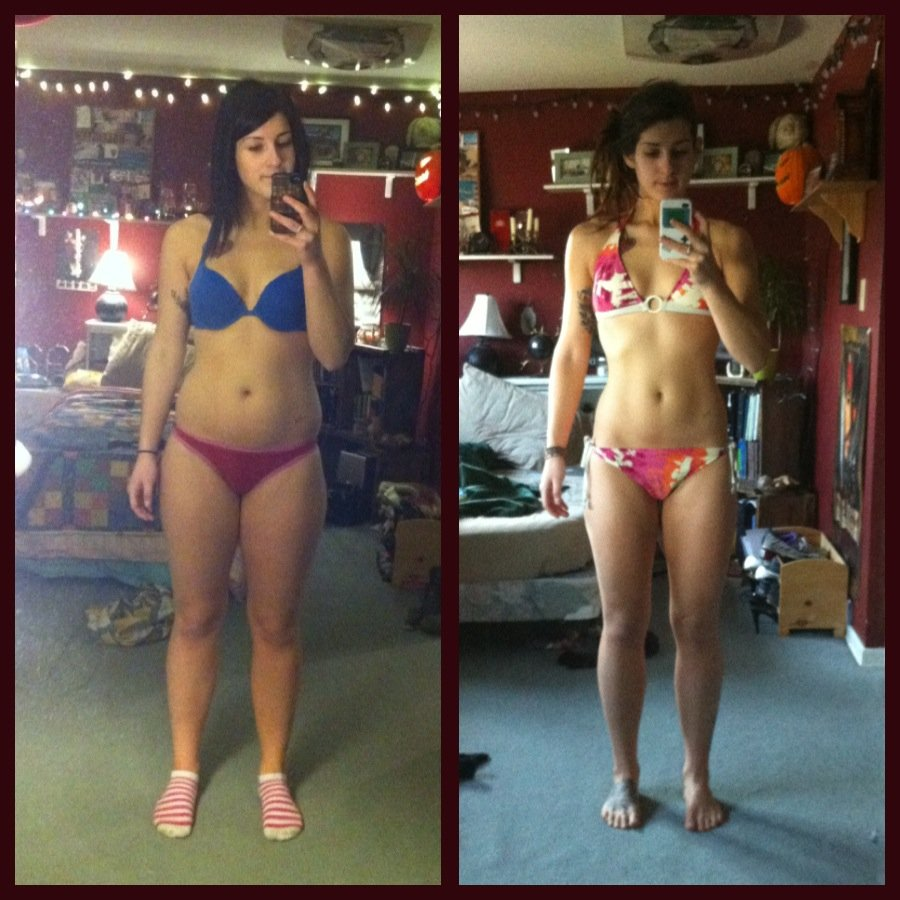
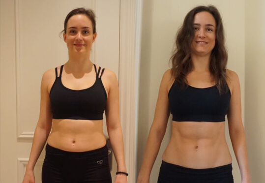
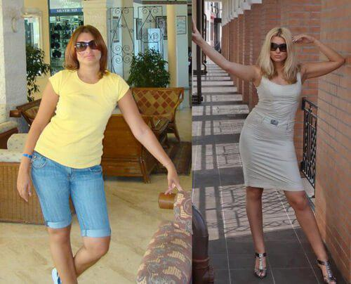
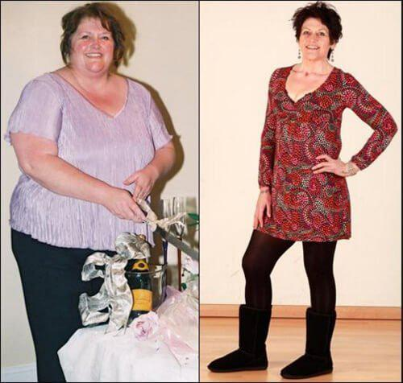
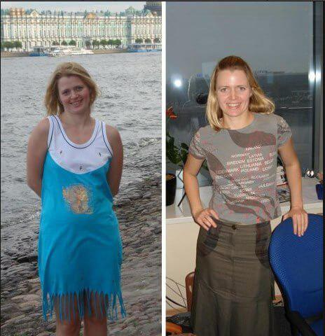

N. Cojocaru Bună ziua, astăzi vom vorbi despre faptul, cum să slăbim într-un mod inofensiv pentru sănătate, fapt ce poate fi făcut de către fiecare din noi la orice vârstă, adică prin ceea, ce de obicei obținem cu muncă asiduă.
N. Cojocaru Am vorbit recent în programul nostru cu dietologul Dumitru Alexăndrescu despre metodele de slăbire. Din păcate mulți oameni care se luptau cu kilogramele în plus, s-au folosit nereușit de unele dintre sfaturile noastre, fapt ce a influiențat negativ sănătatea lor. Vom vorbi despre asta astăzi.
N. Cojocaru După cum v-ați dat deja seama, azi vom vorbi despre faptul, cum să prevenim anorexia – o măsură, pe care unii oameni o întreprind pentru a slăbi. Candidatul în științe medicale Dumitru Alexăndrescu ne va povesti astăzi tuturor despre aceasta:
D. Alexăndrescu În genere, cauzele anorexiei sunt unele diete pe care le urmează tinerii pentru a slăbi. Dar s-a dovedit, că ele nu reprezintă unica pricină.
N. Cojocaru Care încă mai pot fi pricinile acestei diete groaznice?
D. AlexăndrescuDupă cum știți, peste două luni după ce am vorbit despre preparatul am început să primesc plângeri de la femei, care au pierdut prea multe kilograme și deja nu știau ce să facă cu corpurile lor epuizate.

Iată câteva fotografii ale domnișoarelor, care au făcut legătura cu noi și au
învinuit programul după ce am vorbit despre preparat
D. Alexăndrescu Problemă constă în faptul, că reprezintă cel mai puternic preparat natural de ardere a grăsimii din cele care există în prezent în lumea dietologiei.
Motivul pentru care femeile dezvoltă anorexia constă în faptul, că administrarea capsulelor în combinație cu dieta poate avea cele mai serioase consecințe. La urma urmei ce s-a întâmplat, s-a întâmplat. Drept rezultat, femeile cu masa corporală de 80 – 100 kg au devenit niște trestioare suple de 50 kg în 60 zile.
N. Cojocaru Este foarte trist că un produs atât de efectiv a fost folosit de către unele femei într-un mod atât de necorespunzător. Dar mă întreb: de unde un astfel de rezultat neașteptat?
D. Alexăndrescu Este o întrebare corectă, și eu aș fi vrut s-o discut detailat. è un prodotto del tutto naturale che e un produs natural, care accelerează schimbul de substanțe din organism într-un mod firesc. Nu conține componente modificate! Tempoul vieții la folosirea preparatului se mărește datorită îmbunătățirii schimbului de substanțe și a măririi consumului de energie, ceea ce duce la arderea rapidă a grăsimilor.
N. Cojocaru: De fapt, particularitățile acestui produs sunt pur și simplu de necrezut. Dar în ce poate consta pericolul pentru oamenii, care doresc să slăbească?
D. AlexăndrescuAm ajuns la concluzia: Cel mai mare pericol îl prezintă dietele. La administrarea preparatului , nu trebuie de stat la dietă, deaorece depunerile de grăsime dispar oricum. Organismul are nevoie de microelemente și minerale din alimente.
50 kg40 kg30 kg
N. Cojocaru Dumitru, sunt totalmente de acord cu Dumneavoastră, și tot mai multe femei se confruntă cu problema dată. Cu toate acestea, ce le veți recomanda oamenilor care doresc să slăbească, ce să facă ca să evite această problemă?
D. Alexăndrescu În acest caz metoda cea mai efectivă e ca pur și simplu să vă puneți un scop: de a vă determina din start care vă este masa corporală normală. Spre exemplu, sunt oameni care cântăresc 80 kilograme și s-ar simți foarte fericiți dacă ar cântări 55. Ca să-și atingă acest scop, ținând cont de schimbul de substanțe, este nevoie de administrat timp de o lună și jumătate, și în niciun caz mai mult. În acest caz, el trebuie administrat timp de o lună și jumătate, în același timp puteți mânca tot ce doriți, și când veți ajunge la 55 kg, trebuie încetată administrarea preparatului .Dar dacă nu v-ați atins scopul, puteți să continuați sa-l administrați. În așa mod veți obține ceea ce vă doriți, dar nu trebuie să exagerați.
Comentariile altor medici
I. Dumbrăveanu, specialist, candidat în științe
medicale, dietolog personal al laboratorului și al centrului de cercetări în
domeniul alimentației și a dietologiei. Preparatul
I conține componente naturale care accelerează
procesele de schimb de substanțe până la 5 – 7 ori. Aceasta permite organismului să-și
consume tot stocul de grăsime, și să nu creeze depuneri noi. Consider că la momentul
dat, preparatul
reprezintă unica metodă de a se debarasa efectiv și inofensiv de kilogramele în plus.
.


Părerile cititorilor noștri: (22)
Natalia ca întotdeauna dă cele mai bune sfaturi, au trecut 3 săptămâni de când am încetat să slăbesc cu preparatul , și am slăbit cu 14 kg. Voi lăsa aici poza:
Greutatea mea s-a oprit la semnul 48, si nu creste. Mulțumesc!

Sunt totalmente de acord. E un preparat minunat pentru slăbit, și când vă treziți dimineața, hop, si vedeți că ați pierdut încă 1-2 kg, viața vi se pare mai colorată!
Acesta-i un produs natural. Am diabet și alergie la diferite medicamente, chiar și la antibiotice, dar vreau să slăbesc!
Da, acest produs este totalmente natural. Unul din pacienții mei suferă de diabet, și i-am recomandat să administreze preparatul timp de o lună. A reușit să slăbească 19 kg, și n-a avut niciun fel de complicații, din contra, nivelul zahărului a scăzut puțin, ceea ce-i legat direct cu slăbirea.

Mereu am visat să slăbesc ... am descoperit preparatul cu 3 luni în urmă, dar nu știu de ce am hotărât să nu-l cumpăr. Dar mama mea m-a convins, și el s-a dovedit a fi foarte efectiv!
Aș vrea să exprim recunoștință creatorilor proiectului, și îndeosebi, Nataliei. Am slăbit cu 30 kilograme și am învins cancerul. Soțul meu a început să-mi observe corpul și viața mea sexuală ... s-a îmbunătățit cu mult! Administrați preparatul conform instrucțiunilor de pe ambalaj
MULȚUMESC ÎNCĂ O DATĂ!!!!!!
Și eu am încercat preparatul și acum aș fi spus, că asta mi-a salvat familia, și viața. E o minune! Soțul meu a început să se uite la mine cu dorință, și am căpătat încredere în mine. Acum sunt cu mult mai fericită!

Mulțumesc pentru recenzii ... Mi-a venit coletul! m-a motivat intr-adevăr! E destul să slăbești și să te dezbaieri în sfârșit de ridurile urâte. Promit să vă informez despre rezultate!
Sunt foarte bucuroasă că am găsit acest articol! Am încercat multe alte preparate de slăbit, dar, din păcate, rezultatele n-au fost niciodată satisfăcătoare. Înălțimea mea e de 162 cm, și masa de 105 kg. E o adevărată tragedie! Aș vrea să slăbesc cu 35 kg. Sper foarte mult că preparatul funcționeaza! De fapt îmi place că preparatul este natural.
Mi-am primit comanda de ieri. Comanda a ajuns în mai mult de o săptămână! M-a telefonat operatorul ca să verifice adresa livrării, am primit un mesaj-text de la magazin și îndată m-am dus la poștă, am luat-o și chiar de azi mă apuc să slăbesc :)). Ar fi trebuit s-o transmit poștașului! Mi-a luat o groază de timp ... în orice caz, am inceput deja sa pierd din greutate! Mulțumesc Nataliei pentru articolul ei și link-ul pentru comandăde pe site-ul oficial. Aștept cu nerăbdare rezultatele!
Vreau să-i mulțumesc Nataliei Cojocaru, lui Dumitru Alexăndrescu, și, desigur, producătorilor preparatului . Masa mea a scăzut destul de repede, dar principalul e ca eu n-am de gând să mă mai îngraș. E o minune! Acum recomand acest preparat tuturor prietenilor mei

Am încercat , și peste 5 săptămâni am slăbit cu 24 kg. N-aș fi crezut dacă n-aș fi văzut asta cu ochii proprii ... multumesc ... e extraordinar cat de mulți sunt cei, care contribuie la răspândirea acestui preparat în lume. Ajută multor oameni

Maria și Victoria, ați slăbit foarte mult, recomand să faceți un consult la medic.
Vai de mine, m-am uitat la rezultate ... M-am urcat ieri pe cântar și nu mi-a plăcut ce am văzut
Am comandat 2 cutii de ! A devenit prietenul meu! Metoda e minunată, în doar o lună am reușit să slăbesc cu aproape 18 kg! Ura! E victoria mea personală! Sunt mândră de mine!!!
Și totuși în ceea ce privește întrebările puse mai sus, am alergie la multe lucruri, dar acum n-am avut nicio reacție

Confirm că această metodă funcționează. Prietenul meu a slăbit cu preparatul , și trebuie să spun, că eu însumi am pierdut 19 kg timp de o lună, și găsesc asta excepțional!
Mulțumesc tuturor pentru poze, acum am intenția să-mi plasez comanda și să încep a slăbi. Toate temerile mele s-au risipit :). Mâine începe o nouă viață.
”Acest e o adevărată minune modernă! Am pierdut 17,5 kilograme timp de o lună! Fără niciun fel de dietă! Acum el mi-a devenit cel mai bun prieten! Am devenit o domnișoară atrăgătoare!
E un preparat bun! L-am administrat doar pe el, și slăbeam chiar și când dormeam!
Efectul e pur și simplu extraordinar! Am înțeles că nu trebuie să nu mănânc nimic dimineața sau seara, și nu trebuie să respect dieta!
Adelina, n-ați înțeles corect. Unul din avantajele slăbirii cu preparatul constă în faptul, că Dumneavoastră nu veți trebui să simțiți permanent foamea, pentru că în caz contrar vă veți întoarce înapoi kilogramele pierdute. Cu acest produs vă păstrați rezultatele obținute, iar kilogramele pierdute nu se mai întorc. Vă las aici rezultatele trimise de cititorii noștri din Germania.

Cu 22 zile în urmă am primit un colet cu preparatul . Am pierdut 27,3 kg. Am început să slăbesc de la 93 kg, iar acum cântăresc 65,7. Mă simt foarte comfortabil în corpul meu nou. Recomand să-l încerce toți cei, care au probleme cu pierderea kilogramelor
Am într-adevăr mare nevoie să scap de 14 kg și, luând in considerație comentariile, am șansa să reușesc s-o fac. Vreau să fac o comandă și să încep administrarea preparatului conform recomandărilor Nataliei Cojocaru. Îmi place că-i un produs natural. Doriți-mi succes, pentru că voi avea de el nevoie.
alutare tuturor, am slăbit folosind preparatul . Sora mea mi l-a adus anul trecut din Londra. Bănuiesc că în acel moment el nu era aici în vânzare ... dacă e să vorbim cinstit, niciodată n-am crezu că voi avea astfel de rezultate. Credeam că-i un fleac și nu vroiam să încep să-l folosesc, dar sora m-a convins. Am început să-l administrez, și în curând am fost nevoită să merg la cumpărături, pentru că aveam nevoie de o nouă garderobă. Îmi cădeau la modul direct, pantalonii : )), la mijlocul lunii am reușit să dau jos 13 kg (am început cu 67, și am ajuns la 54). Acum greutatea mea e stabilă și situația e sub control, să zic că sunt fericită e puțin spus!! : )) Recomand tuturor să încerce, măcar pentru 2 săptămâni! Veți vedea rezultatele cu propriii ochi!

Aș vrea să-mi exprim mulțumirea Nataliei (după părerea mea, celui mai bun dietolog din lume) și altor persoane, care și-au scris opiniile depre preparatul . Sunt sigură că acest articol a fost util tuturor domnișoarelor, care vor să scape de kilogramele în plus! Am 33 ani, și-n ultimii ani am avut multe probleme din cauza kilogramelor în plus, uneori îmi era greu chiar și să respir, mă dureau oasele de la picioare. Eram mereu obosită și știam mereu că pricina tuturor problemelor era greutatea mea. Articolul dat nu mă convinsese, dar mai târziu am hotărât să comand preparatul și să-l încerc. Rezultatele pe care le-am obținut mi-au depășit orice așteptare! Acum cântăresc 62 kg. Înainte de asta greutatea mea era de 93 kg! În două luni am slăbit cu 31 kg! Am procurat cantitatea recomandată de consultantul site-ului. Sunt într-al nouălea cer de fericire! Simt că corpul mi-a devenit cu mult mai usor, ma simt cu 10 ani mai tânără! Acum respir liber, oasele și spatele nu mă mai dor, și în genere mă simt cu mult mai bine! Mulțumesc mult!